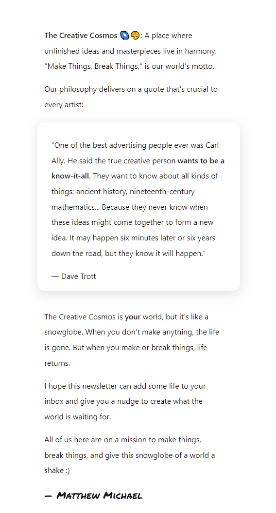

Every morning, millions of people receive newsletters on current events in the world of business and technology. But a whole world is missing. Most newsletters on creativity/art are made by personal brands who tie their own makings into each newsletter. There isn't something more general to the creative world at large. Creative Cosmos is like the Morning Brew for artists.
The development process has been underway for about a month. Here's what I've done in that time.
Readers should be able skim through the newsletter and get something out of it. This means a lot of whitespace and short sentences. Because of this, every sentence must pack a punch.
Hitchhiker's Guide to the Galaxy shined here. It was fun to read simply because of how fast you felt like you were making progress. Sprinkle onto that some emojis, bolded headlines, nice colors, and bizarre sayings that are actually somewhat meaningful at second glance and you have a newsletter you can withstand reading.
The newsletter is built on a quote. Here's a secret page on the site where I explain that:
The newsletters (designed around competitive analysis findings from around 10 other newsletters I enjoyed) are going to provide users with the following every week (in general terms):
Overall it's designed to be like a buddy who gives you a nudge towards creating that thing you've always wanted to share with the world.
I think there's too much of a gap between people who think about making stuff and people who actually share their art with the world.
With this newsletter, I want to help minimize that gap (even if only by a teeny-tiny bit).